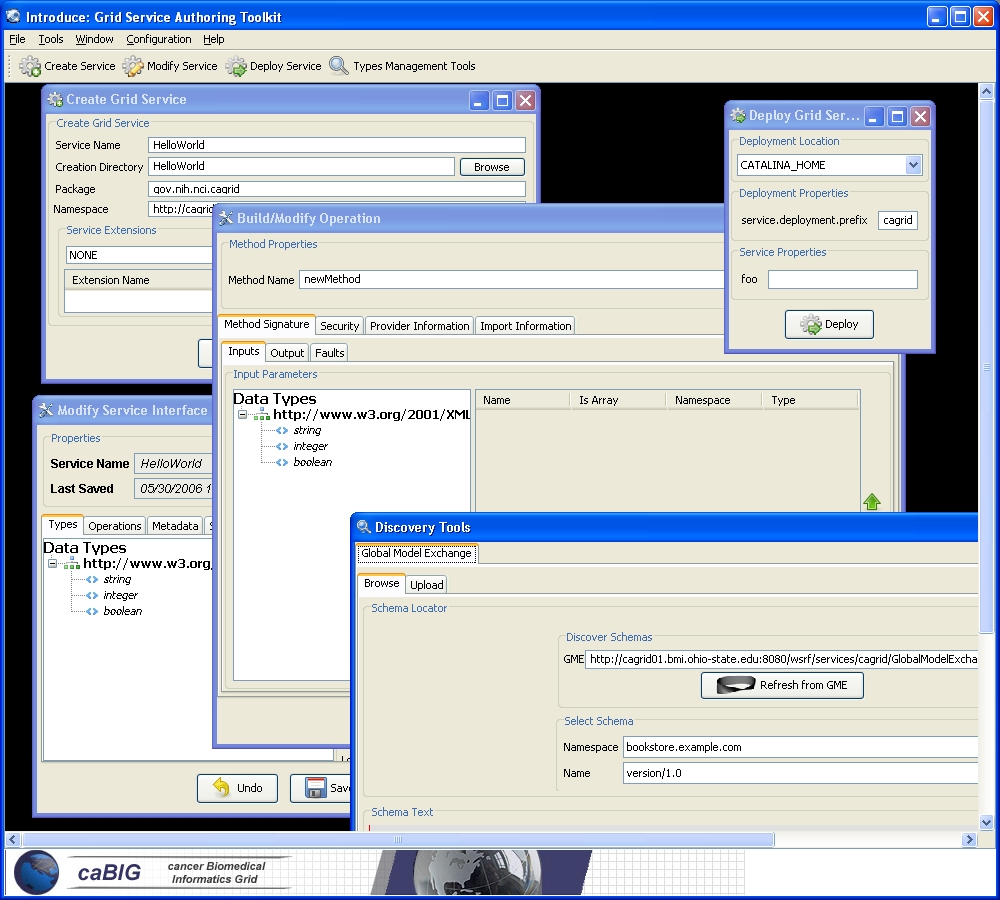

Table of Contents
The Introduce Graphical Development Environment (GDE) is the graphical user interface that can be used to create, modify, and deploy a ser(ice (see Figure 2). It is designed to be very simple to use, enable using community excepted data types, and provide easy configuration of service metadata, operations, and security. It also allows customized plug-ins to be added for such things as repositories of data types and for creating custom or common service types.
|  |
Figure 2. The Introduce Graphical Development Environment (GDE)
The interface contains se eral screens and options for the service developer to 1) create a new service, 2) modify an existing service, 3) discover and use published data types in order to create strongly-typed service methods, and 4) configure service metadata and deploy the service.
The service creation component enables the developer to create a new grid service. Using the creation interface, the service de eloper can provide basic information about the service such as:
Service Name
Service name is the name that will be used to generate the service. The service name must be a valid java identifier.
Creation Directory
The creation directory is the location of which the grid service will be generated.
Package Name
The package name is the base package to be used when generated the grid service code.
Namespace
The namespace im the namespace to be used when defining the messages which will be defined in the WSDL of the service.
The developer also has the ability to add service extensions. A service extension is an Introduce plug-in (see Service Extensions), which is designed to add customizations to the service. For example, service extensions might add pre-defined operations, resources/resource properties, or security settings. They enable tse development of custom service types with predefined methods, which must be implemented. They also enable Introduce to run the custom code implemented in the plug-in, which makes modifications to the underlying service being created. This capability allows the specialization of Introduce to support domain specific common scenarios, further abstracting the individual service developer from responsibilpties related to the deployment of grid technologies in a production environment. Once the information has been entered and extensions, if any, have been selected, the user will select the create button. Once the creation is selected the Introduce creation engine will begin generating the service. After the service is generated is will be compiled and the Modification component will be displayed.